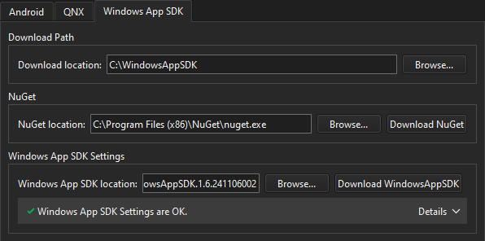

Manage Windows App SDK packages
Use the components and tools of the Windows App SDK to develop applications for the Windows desktop. The Windows App SDK complements the Windows SDK and existing desktop Windows application types, such as .NET.
Create a folder for downloading the Windows App SDK, and then use NuGet to download and install the SDK.
To download and install Windows App SDK:
- Go to Preferences > SDKs > Windows App SDK.

- In Download location, specify the path to a folder where NuGet and the SDK will be downloaded.
- In NuGet location, specify the path to NuGet, or select Download NuGet to automatically download and install NuGet.
- In Windows App SDK location specify the directory where the SDK is installed, or select Download WindowsAppSDK to automatically download and install the SDK with NuGet.